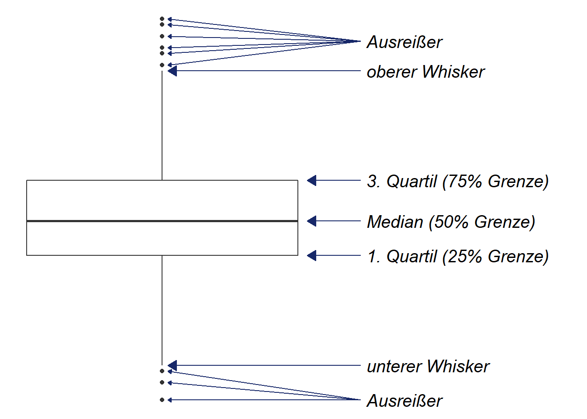

twoway Grafikenseparateseparate ist eine Abkürzung, um Angaben einer Variable entlang der Ausprägungen einer zweiten Variablen aufzuteilen. Das hilft uns bspw. die Aufteilung von inc nach dem Geschlecht (sex) zu vereinfachen. Wir können dies entweder mit zwei Befehlen mit gen und if durchführen oder diese zwei Schritte mit einem separate Befehl durchführen:
gen inc_m = inc if sex == 1
gen inc_f = inc if sex == 2
separate inc, by(sex)
list inc sex inc_m inc_f inc1 inc2 in 1/10##
##
## Running D:\oCloud\Home-Cloud\Lehre\Methodenseminar\Stata_Skript\profile.do . set linesize 80
##
## . qui use "D:\oCloud\Home-Cloud\Lehre\Methodenseminar\Allbus2018.dta", clear
##
## . gen inc_m = inc if sex == 1
## (1,704 missing values generated)
##
## . gen inc_f = inc if sex == 2
## (1,773 missing values generated)
##
## . separate inc, by(sex)
##
## storage display value
## variable name type format label variable label
## --------------------------------------------------------------------------------
## inc1 int %17.0g inc inc, sex == MANN
## inc2 int %17.0g inc inc, sex == FRAU
##
## . list inc sex inc_m inc_f inc1 inc2 in 1/10
##
## +-----------------------------------------------------------+
## | inc sex inc_m inc_f inc1 inc2 |
## |-----------------------------------------------------------|
## 1. | 2200 MANN 2200 . 2200 . |
## 2. | 1500 FRAU . 1500 . 1500 |
## 3. | 1400 MANN 1400 . 1400 . |
## 4. | 3600 MANN 3600 . 3600 . |
## 5. | 1700 FRAU . 1700 . 1700 |
## |-----------------------------------------------------------|
## 6. | 3450 MANN 3450 . 3450 . |
## 7. | 854 FRAU . 854 . 854 |
## 8. | 1500 MANN 1500 . 1500 . |
## 9. | KEINE ANGABE FRAU . -9 . KEINE ANGABE |
## 10. | 978 FRAU . 978 . 978 |
## +-----------------------------------------------------------+Definition der Bestandteile eines Boxplots:
q1 - 1.5* IQRq3 + 1.5* IQRDie Box enthält also die zentralen 50% des Wertebereichs. 